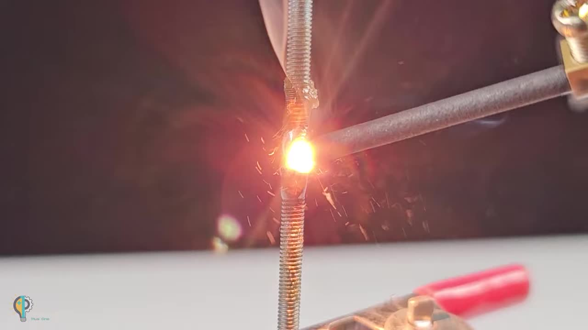

无需专业设备：巧妙利用废弃物品
制作实用工具
Ingenious Tools from Discarded Items Without Professional Equipment
项目亮点速览
Project Highlights Overview
自制简易点焊/电烙铁
DIY Spot Welder/Soldering Iron
利用废旧火花塞和电池，快速搭建小型金属焊接/加热装置。
Build a small metal welding/heating device quickly using discarded spark plugs and batteries.
热切割与封口工具
Hot Wire Cutter and Sealer Tool
从打火机和安全别针中提取元件，制作便携式热切割工具。
Extract components from a lighter and safety pins to create a portable hot cutting tool.
变废为宝创意
Upcycling Creativity
展示如何将日常废弃物转化为功能性工具，实用且环保。
Shows how to transform everyday waste into functional tools, practical and eco-friendly.
项目 1：简易点焊/电烙铁
Project 1: Simple Spot Welder/Soldering Iron
所需材料与工具
Materials and Tools Needed
- 废旧火花塞 (Used Spark Plug)
- 垫圈 (Washer)
- 接线端子 (Terminal Lugs / Eyelet Type)
- 螺母 (Nut)
- 细长螺杆 (Long Threaded Screw/Rod)
- 塑料接线排 (Plastic Terminal Block Strip)
- 蓝/红导线 (Blue/Red Wires)
- 12V 铅酸电池 (12V Lead-Acid Battery, e.g., WP7-12 12V 7Ah)
- 电烙铁与焊锡 (Soldering Iron and Solder)
- 尖嘴钳 (Needle-Nose Pliers)
- 斜口钳/剪线钳 (Diagonal Cutters / Wire Cutters)
- 螺丝刀 (Screwdriver)
- 电钻 (Electric Drill)
- 砂纸 (Sandpaper)
- 夹子 (Clamp)
- 电池外壳金属片或类似物 (Battery Casing Metal Piece or Similar)
制作步骤
Construction Steps
步骤 1：拆卸火花塞接头
Step 1: Remove Spark Plug Terminal
使用尖嘴钳卸下火花塞顶部的金属接头。
Use needle-nose pliers to remove the metal terminal at the top of the spark plug.
步骤 2：组装火花塞底座
Step 2: Assemble Spark Plug Base
将一个垫圈和一个环形接线端子套在火花塞露出的螺纹上，用螺母固定。
Place a washer and a ring terminal lug onto the exposed thread of the spark plug, secure with a nut.
步骤 3：制作焊接尖端
Step 3: Create Welding Tip
取一根细长螺杆，套上一个垫圈。从塑料接线排上切下一小块包含铜芯的部分，拧下铜芯上的螺丝。将铜芯套在螺杆上。
Take a long threaded rod, put a washer on it. Cut a small piece from the plastic terminal block containing the brass insert, unscrew the screws from the brass insert. Slide the brass insert onto the threaded rod.
步骤 4：固定焊接尖端
Step 4: Secure Welding Tip Assembly
将螺杆穿过步骤2中火花塞上的环形接线端子，并用螺母将整个组件固定在火花塞上。使用电钻和砂纸将螺杆前端打磨尖锐。
Pass the threaded rod through the ring terminal lug on the spark plug from Step 2, and use a nut to secure the entire assembly onto the spark plug. Use a drill and sandpaper to sharpen the tip of the threaded rod.
步骤 5：连接电路
Step 5: Connect the Circuit
取一根蓝导线和一根红导线，剥去两端绝缘层。蓝导线焊接到火花塞底部的环形接线端子上。红导线一端连接鳄鱼夹。
Take one blue wire and one red wire, strip insulation from both ends. Solder the blue wire to the ring terminal lug at the base of the spark plug. Attach an alligator clip to one end of the red wire.
步骤 6：焊接测试
Step 6: Welding Test
将蓝导线的另一端（火花塞端）连接到电池的负极，红导线（带鳄鱼夹）连接到电池的正极。使用夹子固定待焊接的金属片，将火花塞焊接尖端接触金属片，铜芯接触金属片并调整距离，即可产生电弧进行点焊。
Connect the other end of the blue wire (spark plug end) to the negative terminal of the battery, and the red wire (with alligator clip) to the positive terminal. Use a clamp to hold the metal piece to be welded. Touch the sharpened threaded rod tip to the metal piece, and the brass insert to the metal piece, adjusting the distance to create an arc for spot welding.

步骤 7：电烙铁测试 (可选)
Step 7: Soldering Iron Test (Optional)
在打磨尖锐的螺杆尖端处涂抹焊锡膏或助焊剂，连接电源。螺杆会迅速发热，可作为简易电烙铁使用。
Apply soldering paste or flux to the sharpened threaded rod tip. Connect the power source. The rod will heat up quickly and can be used as a simple soldering iron.
项目 2：热切割工具
Project 2: Hot Wire Cutter Tool
所需材料与工具
Materials and Tools Needed
- 一次性打火机 (Disposable Lighter)
- 安全别针 (Safety Pins)
- 塑料接线排 (Plastic Terminal Block Strip)
- 蓝/红导线 (Blue/Red Wires)
- 12V 铅酸电池 (12V Lead-Acid Battery)
- 美工刀 (Utility Knife)
- 尖嘴钳 (Needle-Nose Pliers)
- 斜口钳/剪线钳 (Diagonal Cutters / Wire Cutters)
- 螺丝刀 (Screwdriver)
- 棉花或纸巾 (Cotton or Tissue)
制作步骤
Construction Steps
步骤 1：获取打火机发热丝
Step 1: Get Lighter Heating Wire
用美工刀小心地沿着打火机外壳切割，取出内部的金属部分。找到用于点燃的细小螺旋弹簧丝。
Carefully cut along the lighter casing with a utility knife and remove the inner metal part. Find the small spiral spring wire used for ignition.
步骤 2：处理安全别针
Step 2: Prepare Safety Pins
取两个安全别针，将头部弯曲部分拉直一部分。用美工刀或钳子小心地刮掉别针头部内侧的一小块镀层或氧化层，露出金属本色以便导电。
Take two safety pins, straighten a portion of the bent head. Carefully scrape a small area on the inner side of the pin heads with a utility knife or pliers to remove plating or oxidation, exposing bare metal for electrical contact.
步骤 3：连接发热丝与别针
Step 3: Connect Heating Wire and Pins
将打火机上的螺旋弹簧丝小心地展开。将其两端分别缠绕在两个处理好的安全别针的头部弯曲处（刮掉镀层的地方）。
Carefully uncoil the spiral spring wire from the lighter. Wrap each end around the bent head of the prepared safety pins (where the plating was scraped off).
步骤 4：制作电极底座
Step 4: Create Electrode Base
从塑料接线排上切下一块，至少包含两个成对的接线孔。拧松螺丝，将两个安全别针的直端分别插入对应的接线孔中，拧紧螺丝固定。
Cut a piece from the plastic terminal block strip, containing at least two pairs of connection holes. Loosen the screws, insert the straight ends of the two safety pins into the corresponding holes, and tighten the screws to secure them.

步骤 5：连接电源线
Step 5: Connect Power Wires
取蓝导线和红导线，一端连接电池的鳄鱼夹。将另一端的蓝导线插入接线排的另一对孔中，拧紧螺丝固定。同样方式连接红导线。
Take blue and red wires, attach alligator clips to one end. Insert the other end of the blue wire into the other pair of holes in the terminal block, tighten the screw. Connect the red wire in the same manner.
步骤 6：热切割测试
Step 6: Hot Cutting Test
将鳄鱼夹连接到电池正负极。此时安全别针之间的螺旋丝会迅速发热变红。可用于切割或封合薄塑料袋等材料。
Connect the alligator clips to the positive and negative terminals of the battery. The spiral wire between the safety pins will quickly heat up and turn red. It can be used for cutting or sealing thin plastic bags, etc.